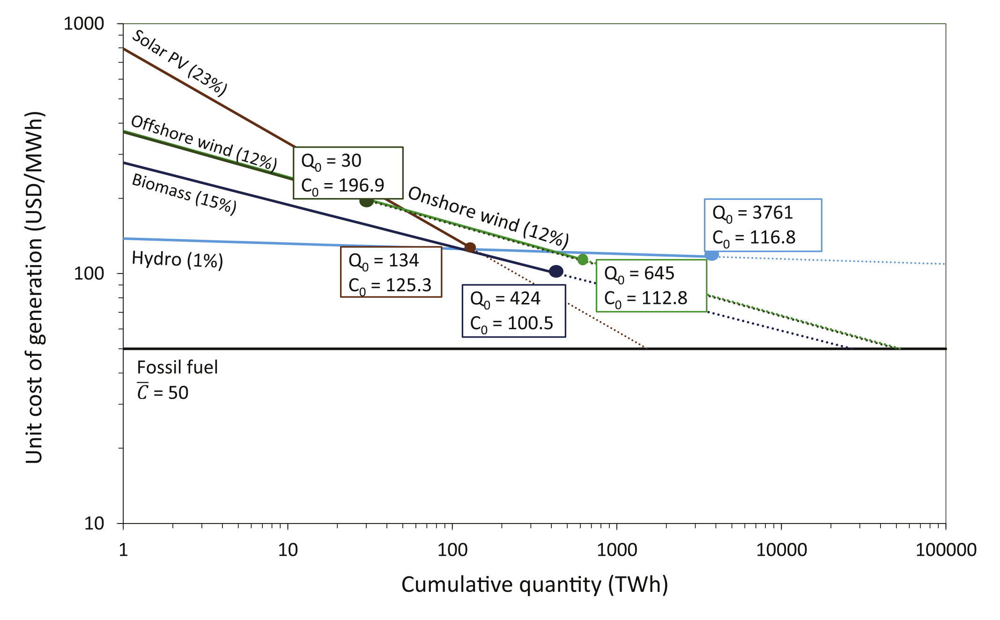

For most energy technologies, cost decreases as the cumulative amount of deployment increases. Often, the cost is seen to decrease approximately the same amount with each doubling of the amount deployed. Straight line curve fits to cost data are commonly known as ‘learning curves’ and look like this:

The idea is that as more of a technology gets deployed, people learn how to make the technology more cheaply, although economies of scale and other factors also play roles in bringing down costs.
I had the good fortune to be in a discussion with venture capitalists who were investing in companies doing research and development (R&D) on energy technologies. They mentioned that they didn’t want their R&D investment to just push them down the learning curve — they didn’t want to just learn things that they would have learned as production scaled up.
They said they want to shift the learning curve downward. They wanted to invest in innovations that would decrease cost as a result of innovations that would not come about simply by scaling up manufacture. (For example, maybe by shifting solar photovoltaic cells to a new kind of substrate.) This raises the question: If an R&D investment could reduce cost by the same amount by shifting the cost-starting-point of the learning curve downward (“curve-shifting R&D”) instead of effectively following the learning curve to that cost (“curve-following R&D”), which one would be better and how much better would it be?
To address this question, I got the help of Soheil Shayegh, a specialist in optimization and other mathematical and technical arts, and talked him into leading this project.
The “learning subsidy” is the total amount of subsidy that would be needed to make a new more-expensive technology competitive with an incumbent technology. The needed subsidy to make a more expensive technology competitive in the marketplace starts out high but decreases as learning brings down the costs of the new technology.
Figure 1 above shows cumulative quantity on the horizontal axis on a logarithmic scale, but such a figure can be redrawn with a linear axis, which turns the straight lines into curves. Figure 2 shows such curves for an idealized case:

What we found was that cost reductions brought about by breakthrough curve-shifting innovations were much more effective at bringing technologies closer to market competitiveness than were the same cost reductions brought about by incremental curve-following innovations. For example, cost reductions in wind and bioenergy that come from curve-shifting research are more than 10 times more valuable than cost reductions that come about from curve-following research.
Further, we found in this idealized framework that the relative benefit of breakthrough innovations depended on only two things: (1) the initial cost of the new technology relative to the incumbent technology, and (2) the slope of the learning curve. The more expensive the new technology and the shallower the learning curve, the higher the value of breakthrough curve-shifting R&D.
I am principally a physical scientist, and Soheil Shayegh is principally some sort of mathematically-oriented engineer. To make a successful study, we needed to make some contact with the real world, or at least the academic literature on learning and technological innovation. To this end, we brought Dan Sanchez into the project. Dan thinks a lot about how public policy can help promote innovation and the deployment of new, cleaner energy technologies.
The result of our work was a study titled “Evaluating relative benefits of different types of R&D for clean energy technologies”, published in the journal Energy Policy. (Unfortunately, due to an oversight, our study ended up behind a paywall, but you can email me at ken@CIunit.org to request a copy.)
Our results indicate that, even if steady curve-following research produces results more reliably, when successful, step-wise curve-shifting research produces much greater benefits.
Our simple calculations are highly idealized and schematic and are designed only to illustrate basic principles.
I infer from our study that, other things equal (and other things are never equal), government funded R&D should focus on trying to achieve step-wise curve-shifting breakthroughs.
I suppose my group’s research should also focus on trying to achieve step-wise breakthroughs, but that’s a tough challenge.
Where to read more
- The publication this post is about: Evaluating relative benefits of different types of R&D for clean energy technologies (Shayegh et al., 2017 · Energy Policy)
- Published article (doi:10.1016/j.enpol.2017.05.029)
- If cutting emissions pays for itself, why is it so hard to do?